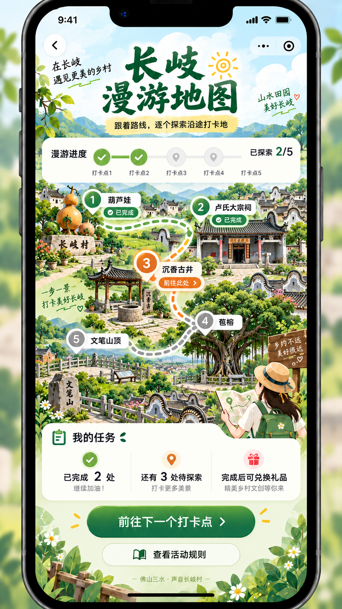
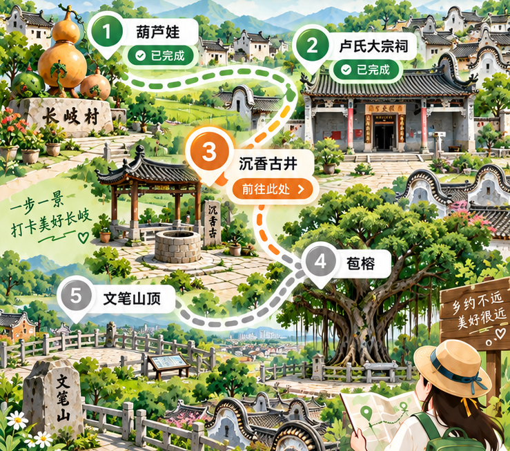
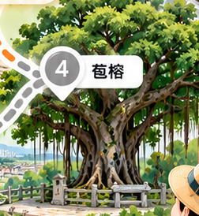
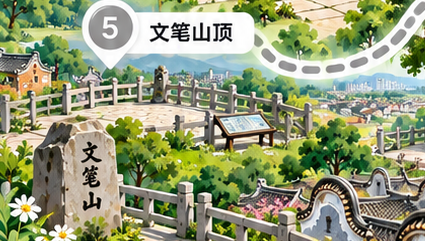

第一关：纯地图底图 原参考图 map.png；未修改。 裁切 (100,503,739,653)，739×653 px。五处地标完整构图可用，但编号、地名卡、已完成/前往此处、绿色/橙色路线、口号与牌匾文字仍在，右下有人物遮挡。不是无 UI 底图。 无 UI 母版：未完成保持本裁图比例与地标位置，逐处修补标签/错字/遮挡，将路线整理为中性实际步道。最低保留 739×653 有效像素；不要套用旧 720×1240。实际页面：未换图素材关通过后才调整图片容器、五个 key 锚点与 HTML 状态按钮。
第一关：p03 沉香古井详情 原参考图 checkin.png；大场景，不采用小缩略图拉伸。 裁切 (528,348,307,302)，307×302 px。保留井口、石井沿和原棚亭。牌匾需去字，屋檐缺边、左下人物边缘需修补；此原生尺寸不足以称作高清详情图。 安全片段：(566,478,266,168)，266×168 px，无文字；只作井身与地面细节参考，缺屋顶，不能冒充完整详情母版。 无 UI 完整详情母版：未完成以已提取棚亭/古井为编辑对象，保留建筑身份并局部补边；建议 768×512，必须有真实修补/扩图，不将插值变大当成高清。实际页面：未换图上传区、现有 hash 视图、CQ 显示范围和身份/扫码逻辑保持原样。
其余四处：仅定位原图来源，未提前标记完成 p01 葫芦娃 · map.png(100,503,229,236)，229×236。沿用金色葫芦装置，不添加动画人物。标签与石刻未清理；后续建议 640×480 来源一致的母版。 p02 卢氏大宗祠 · map.png(509,503,330,252)，330×252。保留镬耳式屋顶、原立面；标签和牌匾/对联字形未清理，后续建议 768×512。 p04 苞榕 · map.png(486,794,252,274)，252×274。保留枝干、树皮、气根；标签/状态路径和边缘遮挡未清理，后续建议 640×480。正确地名来自配置。 p05 文笔山顶 · map.png(100,903,425,241)，425×241。取既有观景台、村落和山林；编号/石刻未清理，后续建议 768×512，不新增山顶建筑。